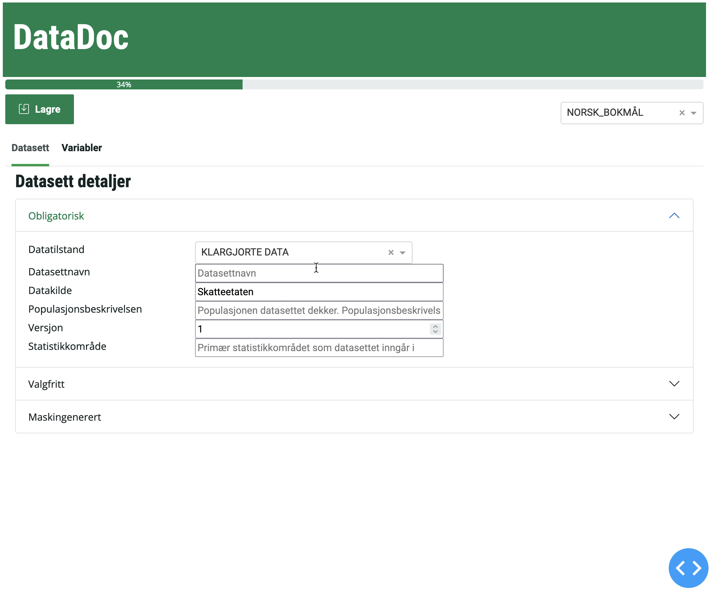

31 DataDoc
For å kunne gjenfinne data i SSB er man helt avhengig av at det finnes et enhetlig system for metadata knyttet til dataene. DataDoc er SSBs system for å dokumentere datasett på den nye dataplattformen Dapla.
Det er bygget et grensesnitt i Python for å gjøre det enklest mulig å dokumentere et datasett. Foreløpig støtter løsningen følgende filformater:
- parquet
- sas7bdat
Under finner du beskrivelse av hvordan du kan begynne å bruke løsningen til å dokumentere datasett.
Vi ønsker at du skal teste DataDoc-applikasjonen. Den viktigste funksjonaliteten skal være tilgjengelig, og det er fullt mulig å benytte DataDoc i SSBs Jupyter-miljøer. Det er imidlertid viktig å være klar over at applikasjonen fortsatt er i en utviklings- og testfase (beta-løsning) og kan inneholde feil og mangler.
Har du spørsmål, eventuelt vil rapporterer om feil og mangler, så setter vi pris på om du gjør dette i Yammer-gruppa Dapla.
31.1 Hvordan dokumentere datasett og variabler med DataDoc
Før du tar i bruk DataDoc-applikasjonen er det viktig å forstå hvilken informasjon som skal til for å dokumentere et datasett. I DataDoc-applikasjonen skal du fylle ut flere felter om både datasettet og variablene som inngår i datasettet, eksempelvis
- kortnavn
- navn
- datatilstand
- populasjonsbeskrivelse
- ++
Det er utarbeidet en detaljert beskrivelse hva hvert felt betyr, og hvordan de skal fylles ut både for datasett og variabler: - DataDoc - hvordan dokumentere et datasett - DataDoc - hvordan dokumentere variablene (variabelforekomstene) som inngår i datasettet
DataDoc skal være installert i alle Jupyter-miljøene i SSB, så du trenger ikke installere pakken selv.
DataDoc kan foreløpig ikke kjøres i Jupyter notebook med virtuelle miljøer (f.eks. et ssb-project), men må startes i den vanlige kernelen i en notebook.
31.2 Prøve DataDoc
La oss lage et test-datasett slik at vi kan leke oss litt med DataDoc:
import pandas as pd
from datadoc import main
# Create fake data
data = {'id': ['9999999999', '8888888888', '7777777777', '6666666666'],
'fylke': ["01", "02", "03", "03"],
'inntekt': [500000, 250000, 400000, 440000],
'rente': [3.2, 4.1, 3.3, 3.4]}
# Creates a Pandas dataframe
df = pd.DataFrame(data)
# Write a Parquet-file to current folder
df.to_parquet("./test.parquet")Nå har vi en fil som heter test.parquet i mappen vi står. Da kan vi åpne DataDoc-grensesnittet for å legge inn metadataene:
main("./test.parquet")Figur 31.1 viser hvordan DataDoc-grensesnittet ser ut.

31.3 Hvor lagres DataDoc-dokumentasjonen (metadata)
Når du trykker på Lagre-knappen i DataDoc så skrives alle metadata til en fil i samme mappe (katalog) som datafilen. Dette er en JSON-fil med nesten samme navn som datafilen. Navnekonvensjonen for metadatafilen er
<navn på datafil uten endelse>__DOC.json
Eksempelvis hvis datafilen har navnet skattedata_p2022_v1.parquet, så vil DataDoc lagre metadata i filen skattedata_p2022_v1__DOC.json.
Fordelen med å benytte en JSON-fil til å lagre metadata er at denne filen kan kopieres og flyttes like enkelt som selve datafilen. JSON-filer er strukturerte tekstfiler som kan leses av både maskiner (Python/R) og av mennesker (åpnes i en tekst-editor).
Se et eksempel på JSON metadata-fil lagret av DataDoc.
I Dapla skal det bygges en felles datakatalog for SSB. Tanken er at alle metadata, eksempelvis datasett-dokumentasjon fra DataDoc (JSON-filene), skal inngå i SSBs datakatalog. Datakatalogen gjør det mulig å finne (søke etter), forstår og gjenbruke data både internt og ekstern.